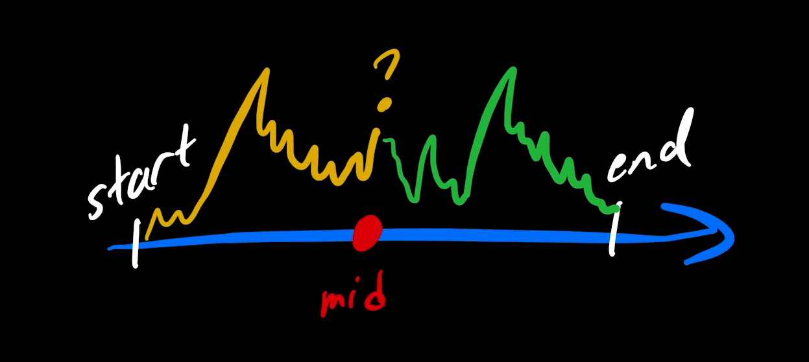

As promised, we now began to explore the process behind financial decisions. In the previous module, we looked back at historical data to gain knowledge of the past behavior of a time series as well as seek relationships between two data sets. Now, using the same historical data, we will begin to court the concept of prediction: what if we look at the start of a historical time series up an intermediate point of time and pretend we do not know the rest of it — as if we had travelled back in time and also had amnesia. Such thought exercise puts us at a position where we can try to make a prediction of what might happen next, given our observations of what has happened until now, then make a decision to either take action or wait, and (this is the cool part) finally study the outcome of our decision by looking at the "future data" that comes after the intermediate point of time to which we chose to "travel back".
In the illustration above, the left-hand side is the earlier data that we are allowed to analyze. The right-hand side is the data we pretend not to have. We make predictions and/or take action based on our analysis at the cut-off point. Then we let "time advance" by looking at that previously ignored later data to assess what would have happened: was our prediction precise, did we choose our actions (or lack thereof) appropriately in terms of the resulting outcome?
In this module, you will have an opportunity to...
Ryan Furhmann. When to Buy a Stock and When to Sell a Stock: 5 Tips. July 26, 2022.